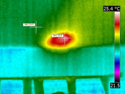
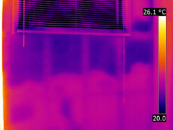
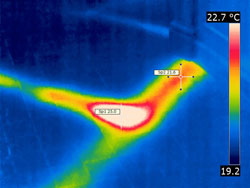

Surchauffe électrique, Infiltration d'eau, Moisissure, Isolation déficiente, Perte énergétique, Fourmis charpentières, Réseau souterrain, Nid de quête, Infiltration d'air.

Un matériau d’isolation qui s’adapte intuitivement. Sur papier, le coefficient de conductivité thermique (facteur R) du chanvre est de 0,085. Ce qui rend le chanvre si exceptionnel et distinct de tous les autres matériaux d’isolation est toutefois son caractère vivant. C’est ce qu’on définit par le nouveau R. En effet, de nombreuses études instrumentées ont démontré que le béton de chanvre permet de régulariser le climat intérieur. On affirme que les variations de températures dans les murs en béton de chanvre sont non linéaires (contrairement à tous les autres matériaux d’isolation). On explique cela au phénomène de changement de phase de l’eau qui s’effectue à l’intérieur même des murs. C’est un procédé relativement simple à comprendre. Le mur de chanvre s’adapte intuitivement si la température extérieure descend ou augmente,. Il va retenir l’eau et donc l’humidité qui se trouve dans l’air (phénomène exothermique de condensation) ou bien relâcher celle-ci et par conséquent effectuer un phénomène endothermique de vaporisation. On peut en conclure que le caractère vivant du béton de chanvre lui permet de s’adapter et de réagir aux fluctuations de température extérieure. Il en résulte donc de très fortes économies sur vos factures de chauffage en hiver en plus de vous libérer de la présence d’un climatiseur en été !